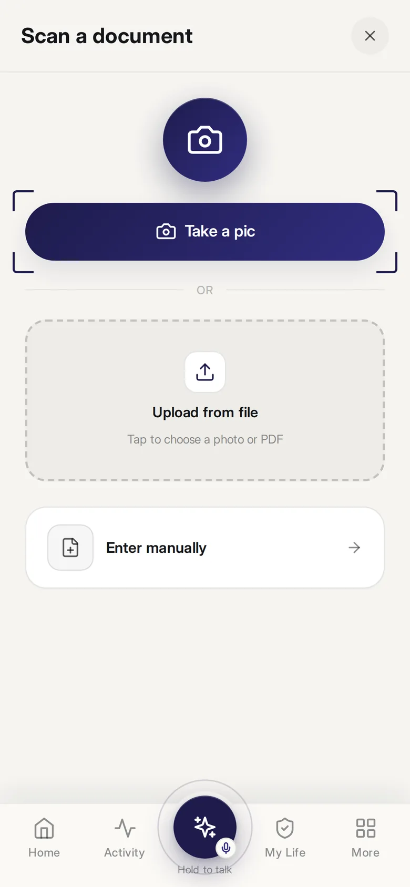
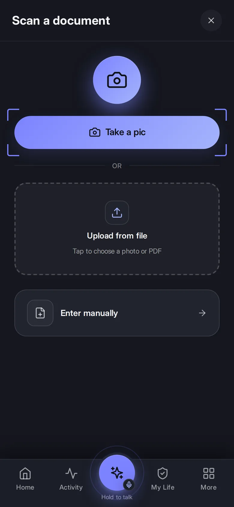

Nine to five.
Plus the extra.
Weekend freelancing, the flat you rent out, the Etsy shop, the YouTube channel. Your salary is taxed for you — the extra isn’t. Finrock keeps it apart from your personal spending, prepares the Self Assessment and warns you before HMRC brings you into MTD.
£14.99/mo incl. VAT · 7 days free, no card · No card


Is this you?
You don’t think of it as a business. HMRC does.
Design, code, consulting, tutoring, photography — invoiced or paid by platform.
Rented out the old flat? That’s property income and it goes on your return.
Even part-time hosting counts once you pass the allowances.
Handmade, vintage, resale. The trading allowance covers the first £1,000 only.
Ad revenue, memberships, sponsorships, affiliate links — all taxable.
Ride-hailing and courier apps. Mileage is your biggest deduction — track it.
01 · Separate
Your side income, cleanly apart.
Every account in one ledger, but each transaction marked business or personal as you go. Your streaming subscription stays personal; the platform payout gets booked properly. No second bank account needed.
- Platform payouts recognised automatically
- Split a card payment across both
- Mileage tracked from your phone
02 · Prepare
Self Assessment, built as you go.
The trade pages, the property pages if you let, the employment page from your P60 — all from the same ledger. What you owe builds live, so January is a confirmation, not a shock.
- Every income source on one return
- Set-aside figure updates with each payout
- A real accountant checks and files it, +£10/mo

03 · Live
Everything else, remembered too.
The car MOT, the phone contract, the passport, the gas safety certificate on the let. One app for the extra income and the life it pays for.
- Bills and subscriptions, price rises flagged
- Renewals counted down
- Documents in one vault

Making Tax Digital
Does MTD apply to you?
It’s decided by qualifying income — self-employment turnover plus gross rent, before expenses. Your salary doesn’t count. A £40k job plus £15k freelance means £15k counts; add £20k rent and you’ve crossed £30k. Finrock works it out from your ledger and tells you when it changes.
Pricing
One plan. Every side line.
Sole trader & Landlord
Side income and/or lets, under the MTD threshold.
£14.99/mo
incl. VAT · 7-day free trial
- Self Assessment incl. property pages
- Every side line and property included
- Invoices, mileage, receipts
- Bills, renewals, documents
Accountant check & submit
A qualified UK accountant reviews every return and files it to HMRC for you.
+£10/mo
cancel any time
- Checks your Self Assessment before it goes
- Files it for you
- Missed years sorted as a voluntary disclosure
Questions
I earn under £1,000 on the side. Do I need this?
Not for tax — the trading allowance covers it and My Life at £9.99 holds the rest of your life. The moment you pass £1,000, switch in one tap.
I missed a few years of Self Assessment.
Add the accountant check and a qualified accountant prepares the back years as a voluntary disclosure. Penalties are usually far lower when you come forward first.
Do I need a separate business bank account?
No. Finrock separates business and personal per transaction, so one account works.
Does Finrock file to HMRC?
Returns are prepared, ready to file. Direct submission switches on when HMRC recognition lands; with the accountant check, the accountant files for you.
The extra income,
properly sorted.
7 days free, no card. Three minutes to connect.
